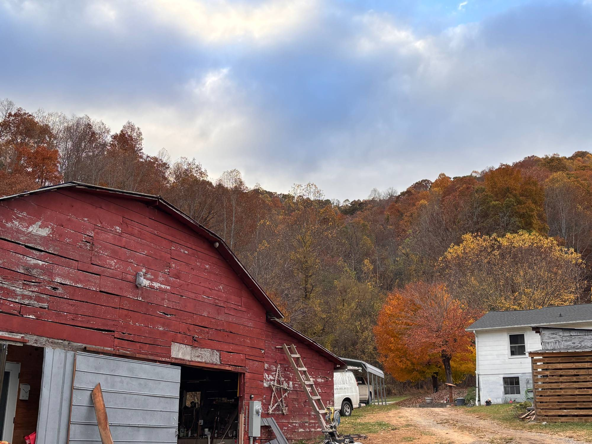
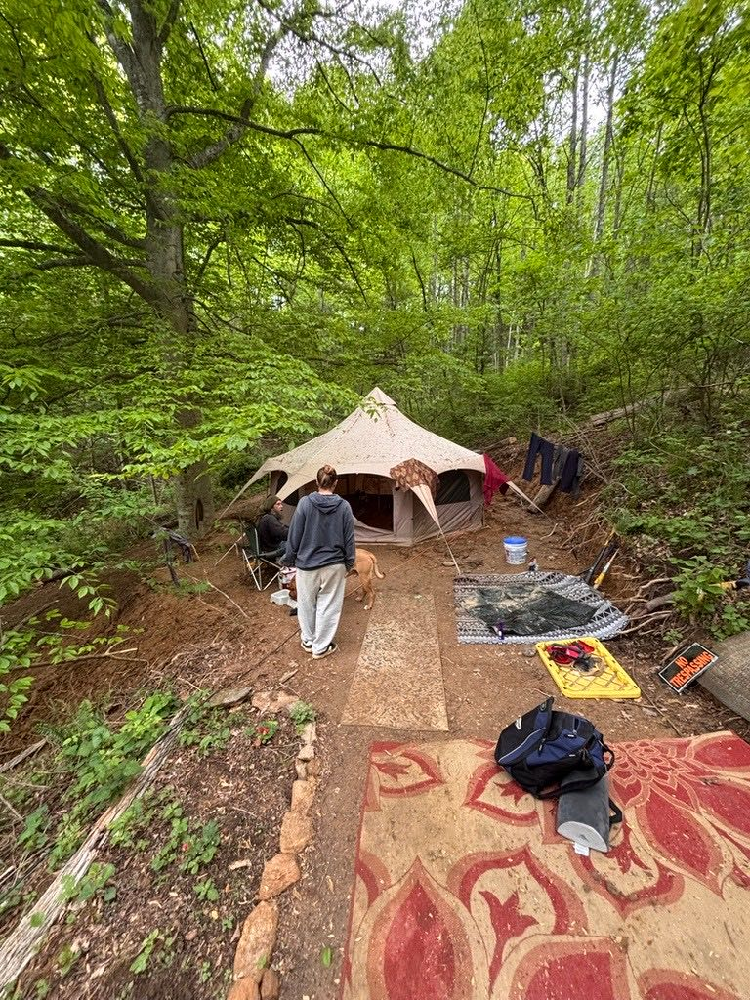
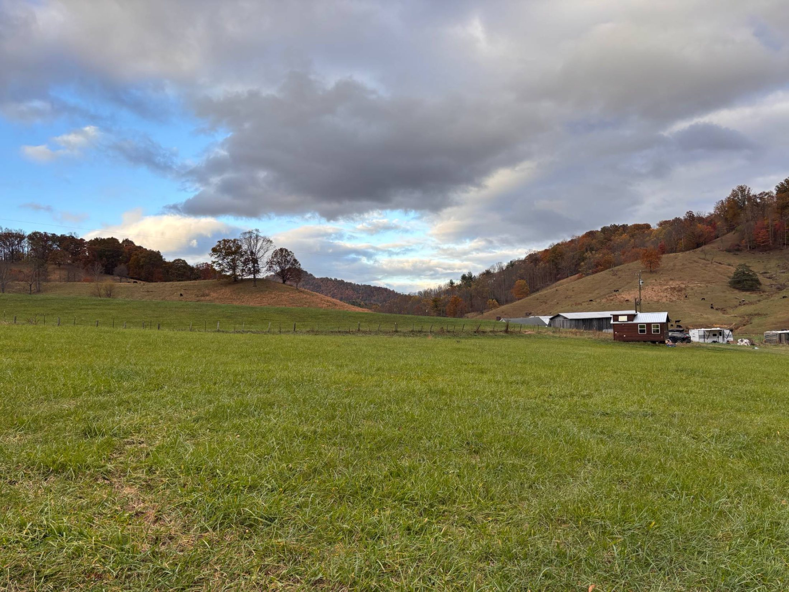
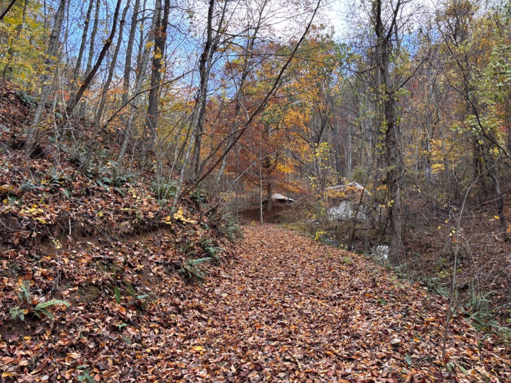
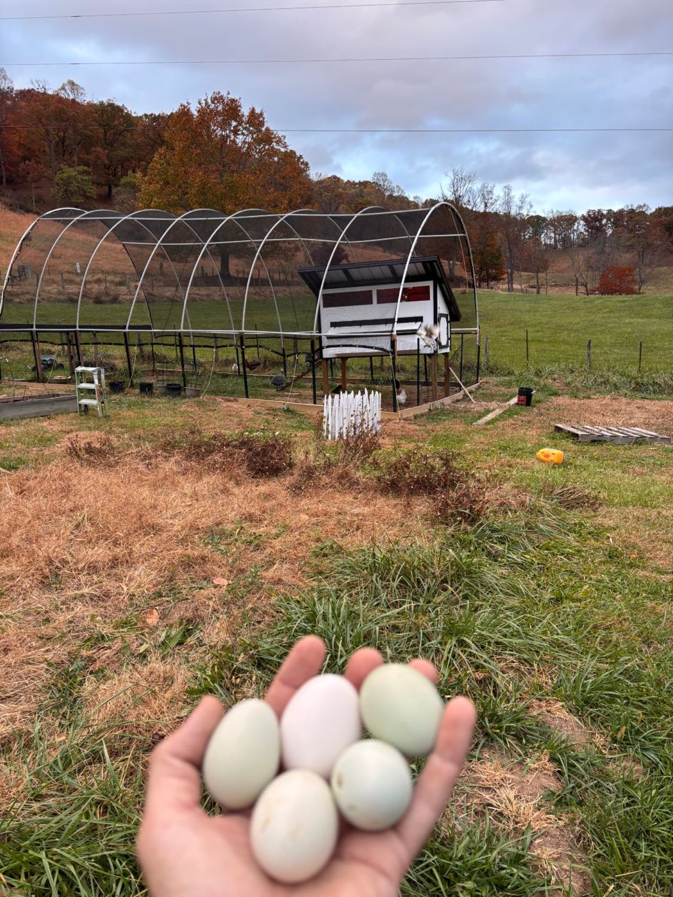
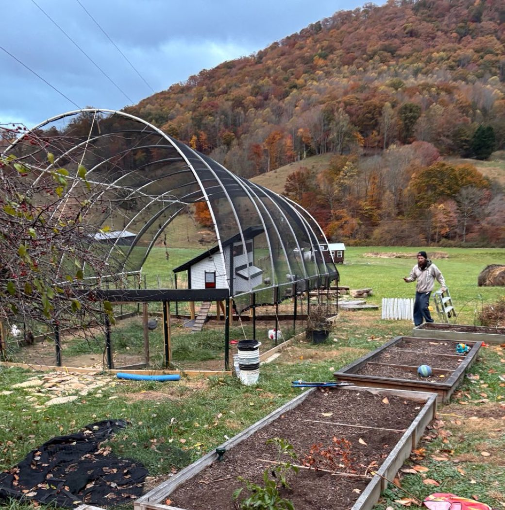
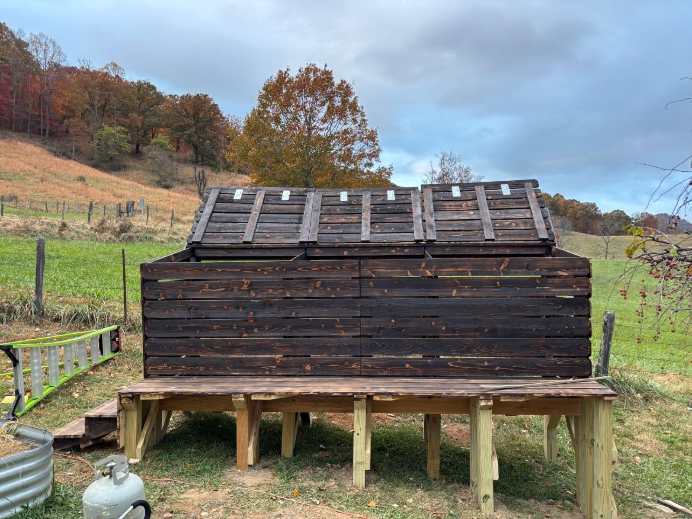

A vision deserves a place to take root.
You know what you want to grow. You just need the ground to grow it on.
Good land, waiting for good use.
We're seeking residents who want to be part of a real community: people with a vision for self-sufficiency who want to put this land to good use.
Turkey Creek Oasis sits in a farming valley outside Leicester, bordered on three sides by working farms. We have 5 flat, farmable acres and 17 acres of forest on the slope, suited to logging, timber, and cabins. Very little of it is in use today.
Land is the hardest part of starting out. Maybe we can solve that part together.



The homestead has started.
A flock laying fresh eggs, raised beds by the coop, and new structures built by hand. You wouldn't be starting from scratch.



Bring the idea. We'll talk about the rest.
No fixed programs, no rigid terms. If you're dreaming of something like this, reach out:
Market gardens
Vegetables, herbs, or cut flowers for tailgate markets and restaurants in Asheville, 25 minutes away.
Small livestock
Chickens, goats, sheep, or bees. The kind of homestead animals that make a pasture come alive.
Orchards & berries
Long-term plantings for someone who wants to put down real roots and watch them grow year over year.
Timber & cabins
17 forested acres on the slope, suited to logging, milling your own lumber, or building cabins in the trees.
Something all your own
Mushrooms, a nursery, a farm-stay, a teaching garden. If you can describe it with a sparkle in your eye, I want to hear it.
A head start on the hard parts.
Starting a farm from bare land is brutal. Here, some of the groundwork is done.
And a place to live while you build: park your tiny home or RV right here at the Oasis. See the details.
It starts with a conversation.
Tell me what you're dreaming of. Come walk the land. Then we'll figure out together what an arrangement could look like, one that's fair to you and good for the land.